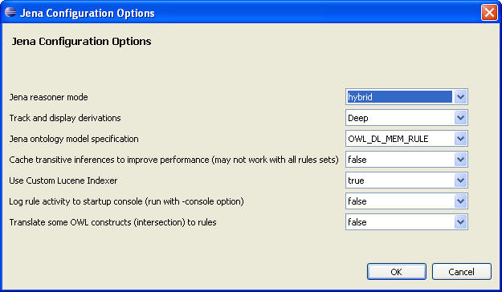

To select a reasoner for a SADL project, open the project and with the project selected in the Project Explorer pane, select Project -> Properties. In the resulting dialog, click on the "+" in front of "Sadl" in the left-hand pane and click on "Reasoner Preferences".

The currently selected reasoner will have a check in front of it as shown above. To configure the reasoner select it and click on "Edit". The contents of the resulting dialog will depend on the reasoner selected. For the default Jena Reasoner the options are as shown below.
Reasoner configuration is saved in the "configuration.rdf" file in the OwlModels folder of the project.
The Jena reasoner can be configured to run in forward, RETE forward, backward, or hybrid modes. The default is hybrid.
Derivation tracking with Jena can be Deep, Shallow, or None. Shallow and Deep will result in the creation of derivation logs. See Derivation Logging and Creating a Derived Model Snapshot for more information.
This value determines the kind of reasoning that will occur over the models. The following are legal values of the Jena ontology model specification. For additional information, see the Jena documentation: https://jena.apache.org/documentation/inference/index.html#OWLcoverage.
OWL_MEM : A specification for OWL models that are stored in memory and do no additional entailment reasoning
OWL_MEM_RDFS : A specification for OWL models that are stored in memory and use the RDFS inferencer for additional entailments OWL_MEM_TRANS : A specification for OWL models that are stored in memory and use the transitive inferencer for additional entailments OWL_MEM_RULE: A specification for OWL models that are stored in memory and use the OWL rules inference engine for additional entailments OWL_MEM_MICRO_RULE: A specification for OWL models that are stored in memory and use the micro OWL rules inference engine for additional entailments OWL_MEM_MINI_RULE: A specification for OWL models that are stored in memory and use the mini OWL rules inference engine for additional entailments OWL_DL_MEM : A specification for OWL DL models that are stored in memory and do no additional entailment reasoning OWL_DL_MEM_RDFS: A specification for OWL DL models that are stored in memory and use the RDFS inferencer for additional entailmentsOWL_DL_MEM_TRANS: A specification for OWL DL models that are stored in memory and use the transitive inferencer for additional entailments
OWL_DL_MEM_RULE: A specification for OWL DL models that are stored in memory and use the OWL rules inference engine for additional entailments OWL_LITE_MEM: A specification for OWL Lite models that are stored in memory and do no entailment additional reasoning OWL_LITE_MEM_TRANS: A specification for OWL Lite models that are stored in memory and use the transitive inferencer for additional entailments OWL_LITE_MEM_RDFS: A specification for OWL Lite models that are stored in memory and use the RDFS inferencer for additional entailments OWL_LITE_MEM_RULE: A specification for OWL Lite models that are stored in memory and use the OWL rules inference engine for additional entailments RDFS_MEM: A specification for RDFS ontology models that are stored in memory and do no additional entailment reasoning. Note that this model specification does not support IMPORT and so can not be used for models that import other models. RDFS_MEM_TRANS: A specification for RDFS ontology models that are stored in memory and use the transitive reasoner for entailments. Note that this model specification does not support IMPORT and so can not be used for models that import other models. RDFS_MEM_RDFS: A specification for RDFS ontology models that are stored in memory and use the RDFS inferencer for additional entailments. Note that this model specification does not support IMPORT and so can not be used for models that import other models.It is important in some models to use a reasoner that provides at least transitive closure on the class hierarchy. If Circle is a subclass of Shape and MyCircle is an instance of Circle (MyCircle isa Circle.) , then a transitive reasoner will also infer that MyCircle is an instance of a Shape. The table below indicates which ModelSpec options provide transitive reasoning. Of course different ModelSpec settings support various other inferencing as well.
|
ModelSpec |
Supports Transitive Reasoning |
Time for ?? |
| OWL_MEM | No | |
| OWL_MEM_RDFS | Yes | |
| OWL_MEM_TRANS | No | |
| OWL_MEM_RULE | Yes | |
| OWL_MEM_MICRO_RULE | Yes | |
| OWL_MEM_MINI_RULE | Yes | |
| OWL_DL_MEM | No | |
| OWL_DL_MEM_RDFS | Yes | |
| OWL_DL_MEM_TRANS | No | |
| OWL_DL_MEM_RULE | Yes | |
| OWL_LITE_MEM | No | |
| OWL_LITE_MEM_RDFS | Yes | |
| OWL_LITE_MEM_TRANS | No | |
| OWL_LITE_MEM_RULE | Yes |
The fourth, sixth, and seventh options correspond to Jena reasoner settings and can be used as desired.
The Jena Reasoner in SADL supports querying with LARQ, a combination of Lucene and SPARQL (see http://jena.apache.org/documentation/larq/index.html). It is possible to use a custom Lucene indexer to index the Jena model for querying with LARQ. The default customer indexer is com.ge.research.sadl.jena.reasoner.LuceneModelIndexerImp, which implements the Java interface class com.ge.research.sadl.jena.reasoner.ILuceneModelIndexer. To use a different indexer, create the indexer class so that it implements this same Java interface class and then set the indexer class by adding a line like the following, but with your new class specified, to the configuration.rdf file in the OwlModels folder. (Note that this must be done manually at this time.)
<pLuceneIndexerClass rdf:datatype="http://www.w3.org/2001/XMLSchema#string">com.ge.research.sadl.jena.reasoner.LuceneModelIndexerImp</pLuceneIndexerClass >
The default indexer provides the following capability. For all non-bnode properties and classes in the model, excluding those in RDF, RDFS, and OWL namespaces, if the property or class has no labels, take the localname and convert camel case to lowercase words with spaces, convert underscores to spaces, and drop any leading "has". If property and class names are generated either using camel case or underscores, the result will be labels that contain meaningful English words for text search.